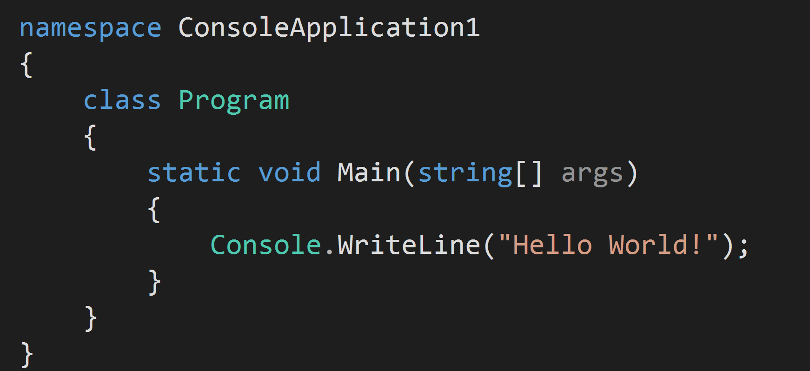

App Dev 101
Intro To Programming Languages
Created by AJ Liptak
Agenda
- What is a Programming Language?
- Interpreted vs Compiled Languages
- Strongly vs Weakly Typed
- Common Languages and Their Uses
- Hello World
What is a Programming Language?
A way to tell a computer what to do
- Programs are just a series of detailed instructions
- Each language provides a way of giving instructions to the computer
Language Overview
- Each language has different specialties
- Most languages can be grouped into categories based on uses
- Those categories generally share similar syntax
Language Categories
- Describe Visual Layout
- Describe How Things Look
- Retrieve Data
- Logic
Markup Languages
Describe Visual Layout
- HTML
- XML
- XAML
HTML
Tags

Styling Languages
Describe how things look
- CSS
- LESS
- SASS
CSS
Querying Languages
Retrieve Data
- SQL
- LINQ
- HTSQL
SQL

Logic Languages
Control the Application
- C#
- Javascript
- Java
- Ruby
Complex Languages
Responsible For Most Things
C#
Javascript
Interpreted vs Compiled
How Programs Run
Interpreted
- Need a Program To Evaluate Them
- Evaluated Just In Time
- Generally Weakly Typed
Examples
- Javascript
- Ruby
Compiled
- Evaluated Before Execution
- Converted To Machine Language
- Generally Strongly Typed
Examples
- C#
- Java
- Objective C
Strongly vs Weakly Typed
Var vs Typed
Strongly Typed
- Represents Only One Thing
- Things of Different Types Can Never Be Equal
- A variable of type int can not be set to a string
-
Example
Weakly Typed
- Everything is the same type
- Type is evaluated when it's interpreted based on value
- A variable of type int can equal a string
-
Example
What Languages are used For What
Web Development
- HTML
- CSS
- Javascript
- C#
- Ruby
Desktop Apps
- C#
- Java
- Objective C
Back-End
- C#
- Java
- Javascript
Mobile Apps
- Objective C
- C#
- Java
- HTML CSS & Javascript